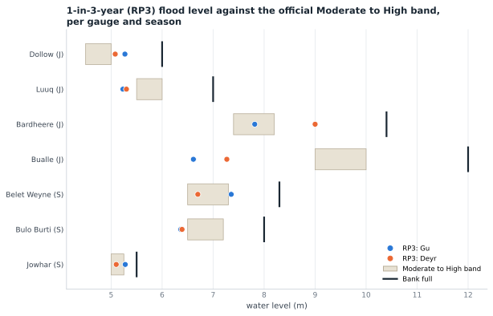
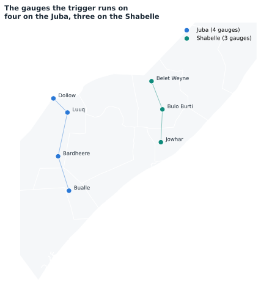
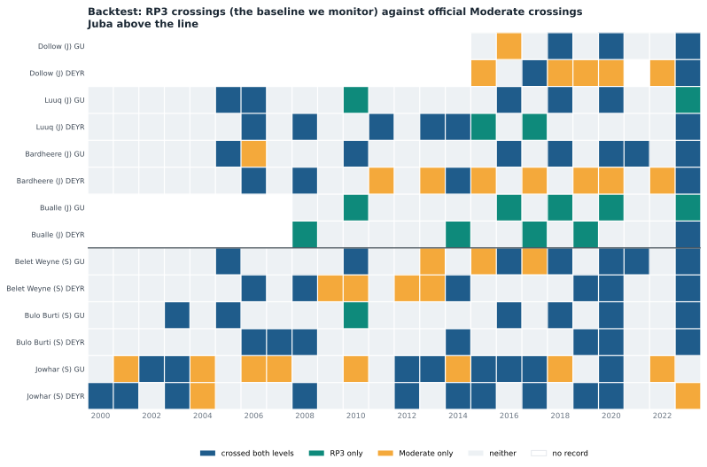
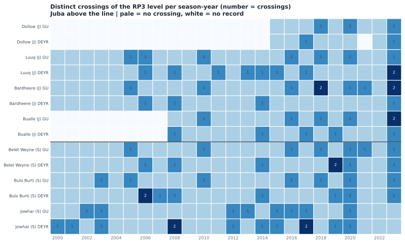
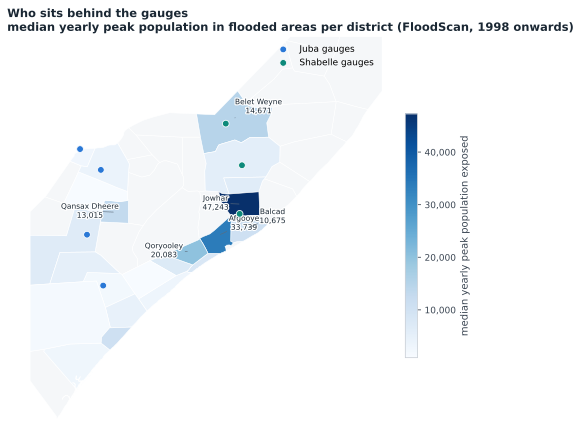
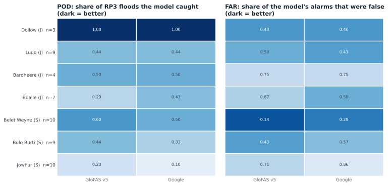
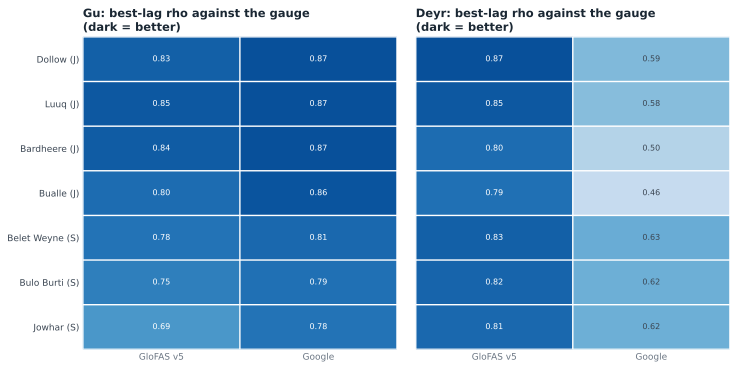
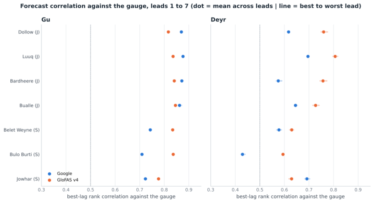
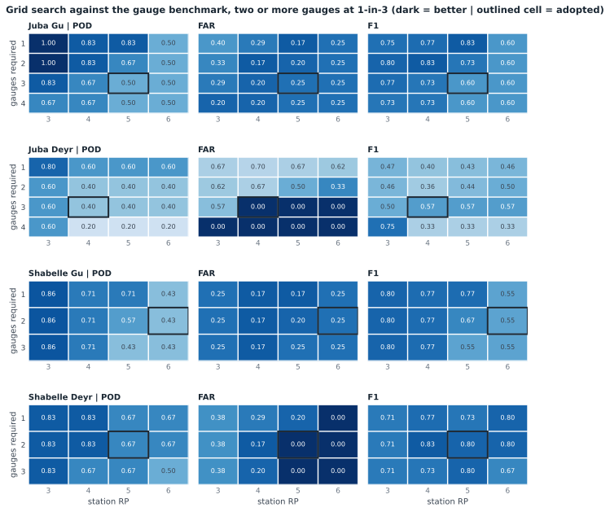
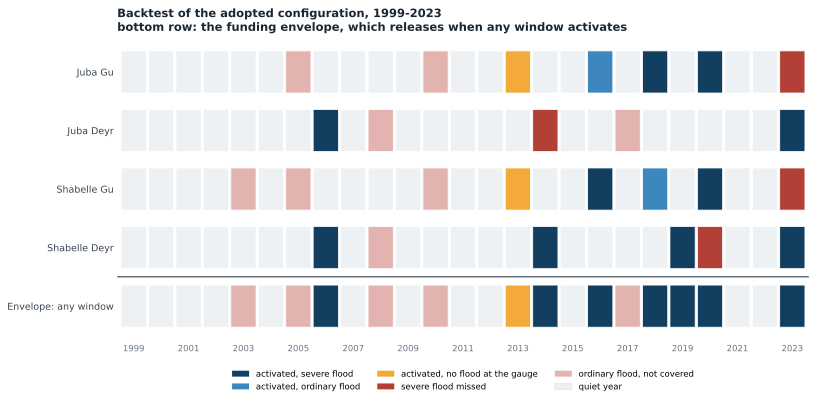

1Key takeaways
- Model performance differs by river and season. GloFAS leads the Shabelle and both Deyr windows; Google leads the Juba in Gu.
- Accuracy holds from one to seven days ahead, so a one-week action window is defensible. Models still miss a share of floods, so SWALIM guidance belongs in the trigger design.
- The gauge record is the reference, and only the reporting gauges can serve a live trigger: 4 on the Juba, 3 on the Shabelle. Thresholds are fitted on post-2000 data, because flooding has been recorded far more often in recent decades.
- A flood is defined by the computed 1-in-3-year level at the gauge, not by an official SWALIM mark: it is frequency-calibrated, so it means the same thing at every gauge.
2SWALIM thresholds
SWALIM publishes three risk levels per station: moderate, high and bank full. Each station's 1-in-3-year level is estimated from its own annual maxima and compared against them. Where the 1-in-3-year level sits above the moderate mark, that mark is crossed more often than once every three years.

3SWALIM events
An event is a spell in which the level sits at or above the baseline. The level must stay below it for at least 14 days before a new crossing counts separately, so a brief dip mid-flood does not split one flood in two. Readings stop rising once a gauge reaches bank full, so the largest events are understated.


4SWALIM risk level crossings

5SWALIM against flood exposure

6Reanalysis performance
Each model's 1-in-3-year signal against the events recorded at the gauges, 2002 to 2023, within a 7-day window. POD is the share of events caught; FAR the share of alarms that were false.

| Station | Events | GloFAS v5 | GloFAS v4 | Google GRRR | GEOGloWS v2 |
|---|---|---|---|---|---|
| luuq | 9 | 0.44 / 0.50 | 0.22 / 0.71 | 0.44 / 0.43 | 0.11 / 0.88 |
| dollow | 3 | 1.00 / 0.40 | 0.67 / 0.60 | 1.00 / 0.50 | 0.67 / 0.60 |
| bardheere | 4 | 0.50 / 0.75 | 0.25 / 0.86 | 0.50 / 0.75 | 0.25 / 0.88 |
| bualle | 7 | 0.29 / 0.67 | 0.43 / 0.57 | 0.43 / 0.50 | 0.43 / 0.57 |
| belet_weyne | 10 | 0.60 / 0.14 | 0.10 / 0.88 | 0.50 / 0.29 | 0.30 / 0.62 |
| bulo_burti | 9 | 0.44 / 0.43 | 0.11 / 0.88 | 0.33 / 0.57 | 0.44 / 0.50 |
| jowhar | 10 | 0.20 / 0.71 | 0.10 / 0.88 | 0.10 / 0.86 | 0.10 / 0.86 |
7Model correlation
Daily tracking rather than event detection: the best-lag rank correlation between each model and the river's reference gauge, allowing for travel time.

| River | Best | Second | Third | |
|---|---|---|---|---|
| Juba (worse season) | GloFAS v5 0.83 | GloFAS v4 0.82 | GEOGloWS v2 0.8 | Google GRRR 0.53 |
| Shabelle (worse season) | GloFAS v4 0.78 | GloFAS v5 0.74 | GEOGloWS v2 0.73 | Google GRRR 0.63 |
8Forecast correlation
The same test on the forecasts rather than the hindsight simulations, leads 1 to 7.

9Selected stations
| River | Gauges used |
|---|---|
| Juba | luuq, dollow, bardheere, bualle |
| Shabelle | belet_weyne, bulo_burti, jowhar |
Gauges whose records stop in 2008 or earlier can calibrate but cannot monitor. Upstream stations see the flood before the downstream reference gauge: Dollow leads Luuq by about five days in Deyr, and Belet Weyne leads by about six in Gu.
10Grid search
Every combination of station return period and number of gauges that must agree, scored against the gauge benchmark. The outlined cell is the one adopted.

11Best configuration
| River | Season | Forecast | Gauge threshold | Gauges that must agree | Would have activated in |
|---|---|---|---|---|---|
| Juba | Gu | GEOGloWS v2 | 1-in-5 | 2 of 4 | 2018, 2020 |
| Juba | Deyr | GloFAS v5 | 1-in-4 | 3 of 4 | 2006, 2023 |
| Shabelle | Gu | GloFAS v5 | 1-in-6 | 2 of 3 | 2005, 2016, 2018, 2020 |
| Shabelle | Deyr | GloFAS v5 | 1-in-5 | 2 of 3 | 2006, 2014, 2019, 2023 |
The full amount is released whenever the trigger is reached along either river in either season, so the combined rate across all four windows is what the budget must be sized on. As configured it would have released in 8 of 25 years, once every 3.2 years, catching 7 of the 8 severe years.
